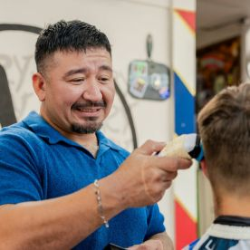
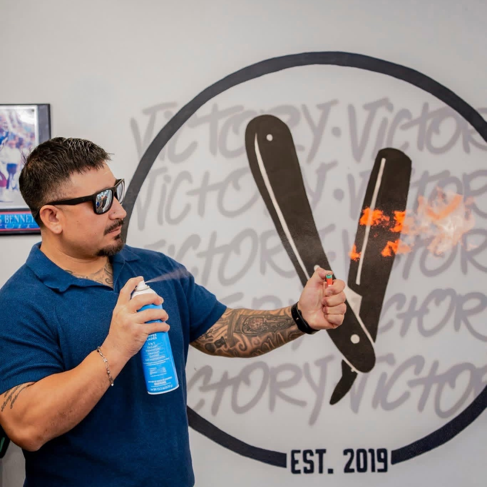
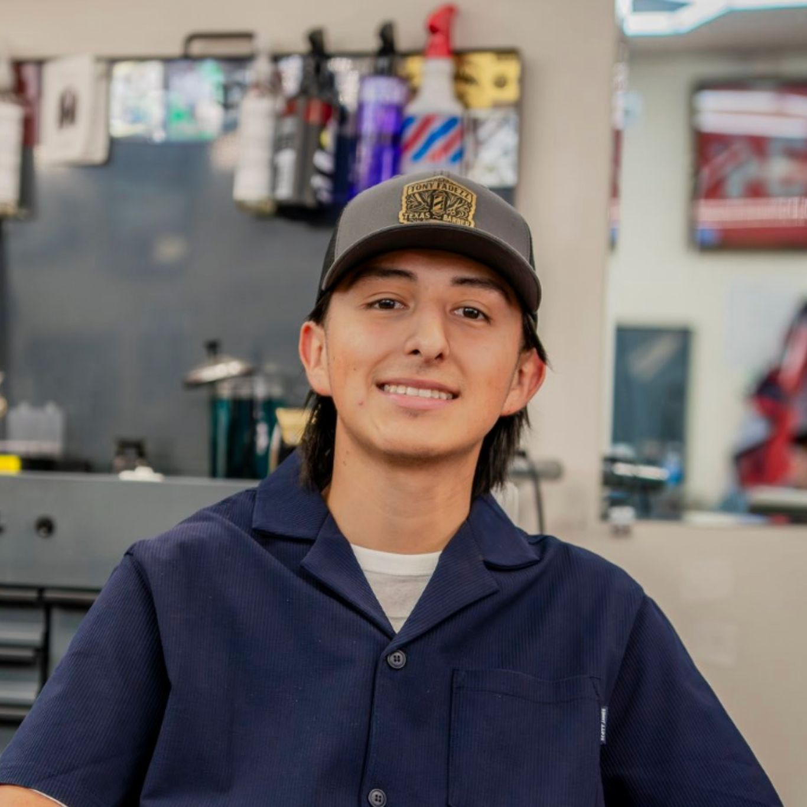
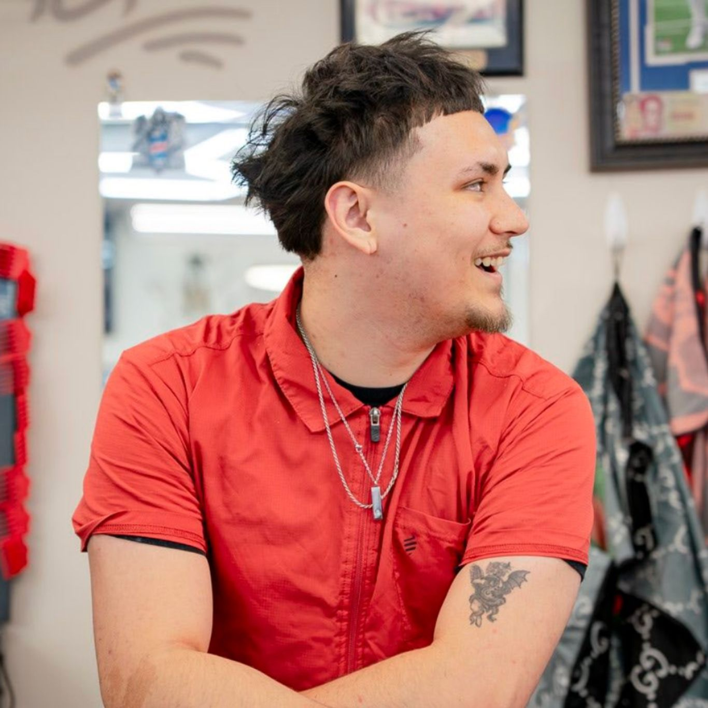
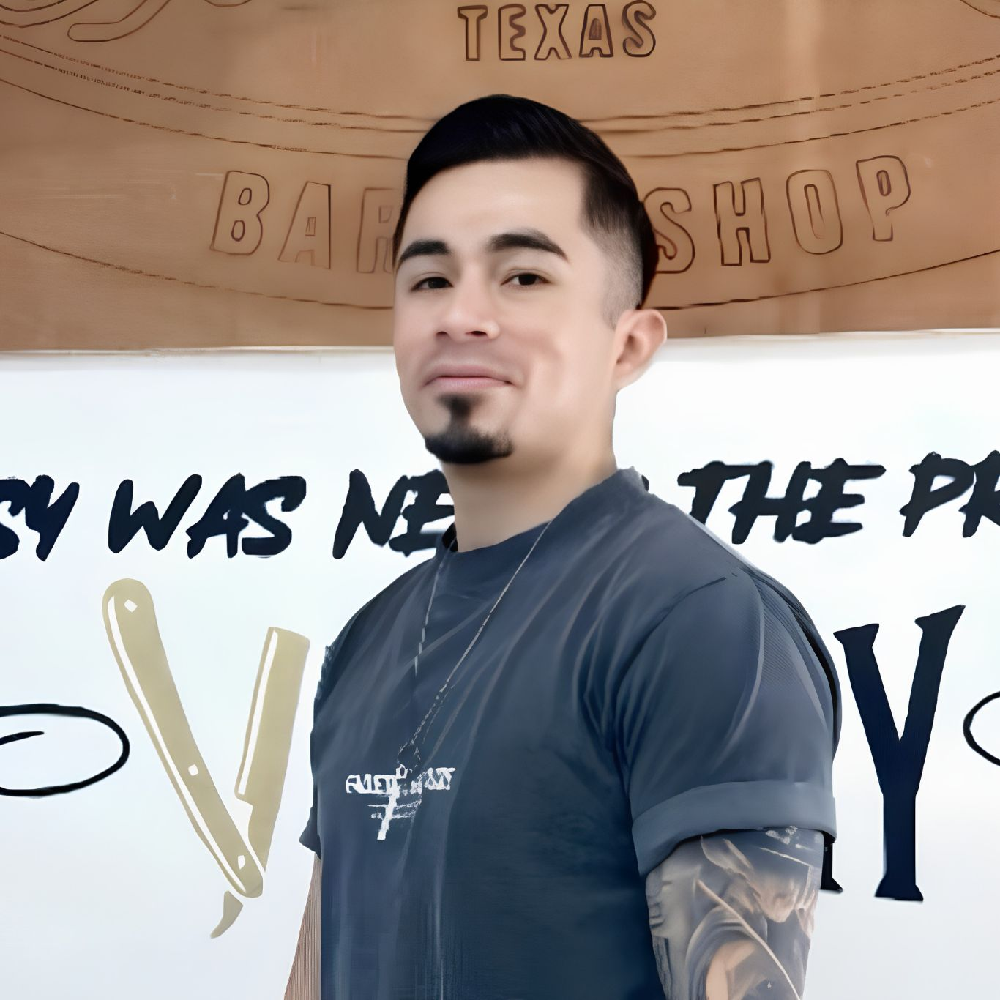
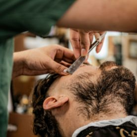
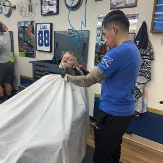

Precision
Haircuts
From classic styles to modern fades, tailored to your look.

I’ve been cutting hair for 21 years, and coming from a family of 10 taught me the value of hard work, connection, and taking care of people. Over the years, I’ve worked with all styles and hair types, giving me experience with a wide range of cuts and ethnicities. My approach is professional, attentive, and focused on understanding exactly what each client wants before ever picking up the clippers. First-time clients can expect a thorough consultation, attention to detail, and results that match the look they’re going for. One of my favorite parts about being a barber is building lasting relationships with clients and creating connections that go far beyond the haircut itself.
Book Now
I’ve been cutting hair professionally for over five years, but it all started by cutting my own hair and helping my siblings so my parents could save money. Over time, I realized how much I enjoyed the craft and turned that passion into a career. I specialize in fades, tapers, textured cuts, beard work, and clean modern styles, always focusing on smooth blends, attention to detail, and making sure every cut fits the client’s look and personality. My goal is to create a laid-back, comfortable atmosphere where clients can relax, have a good conversation, and leave feeling confident. More than anything, I enjoy giving people an experience and helping clients feel refreshed every time they leave my chair.
Book Now
I’ve been cutting hair for nearly two years, and what first drew me into barbering was the artistry behind it along with being introduced to the craft by a family member. I specialize in skin fades, sharp lineups, razor shaves, and hot towel treatments, always focusing on detail and quality with every service. My approach in the chair is open and welcoming because I enjoy building real friendships with my clients and getting to know the people who sit in my chair. First-time clients can expect a detailed consultation, high-quality service, and a relaxing experience focused on helping them achieve the exact look they want. One of my favorite parts about barbering is meeting new people, building connections, and continuing to sharpen my skills and techniques every day.
Book Now
I’ve been cutting hair for about four months, and barbering felt like the right path for me because I’ve always liked staying fresh and keeping up with clean styles. I enjoy working with all types of cuts and take pride in giving every client the best haircut I can. My vibe in the chair is chill, professional, and focused on making people feel comfortable while they’re getting cleaned up. As a growing barber, I’m always working to improve my craft and give clients a cut they can feel confident about. My favorite part of barbering is seeing the reaction on a client’s face when they turn around and see the final result.
Book NowWe offer a full range of grooming services designed for the modern man. This includes custom haircuts, skin fades, taper cuts, and our signature straight-razor shaves. Every service is performed with high-quality tools and a focus on detail, ensuring you leave the shop looking exactly how you envisioned.

From classic styles to modern fades, tailored to your look.

Experience the luxury of a hot towel and a smooth, professional finish.

Keep your facial hair looking sharp and well-maintained.